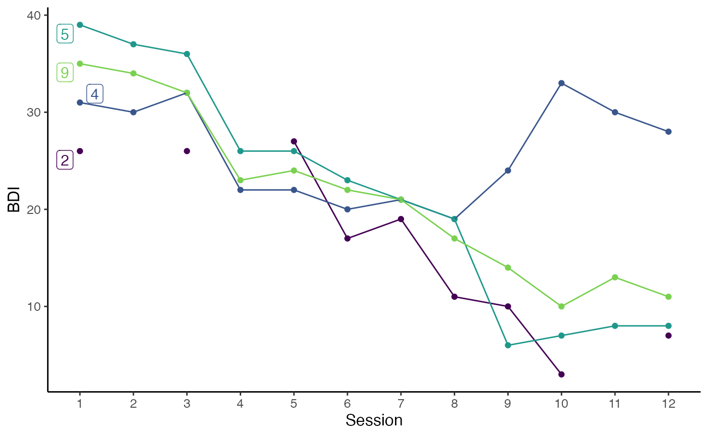
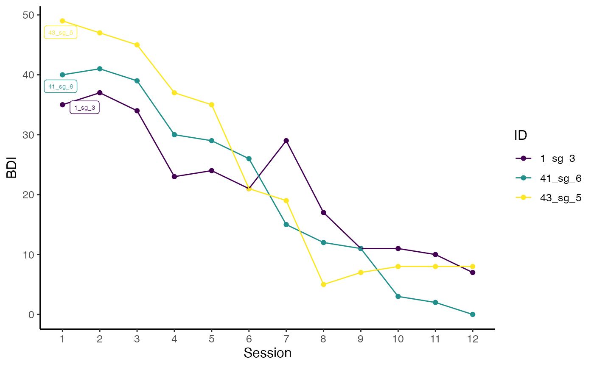

plot_sg_trajectories.RdPlot individual trajectories of selected cases using ggplot.
This function can be combined with a filter command to explore the trajectories of individual or groups of cases.
Further ggplot2 components can be added using + following this function.
plot_sg_trajectories(data, id_var, var_list, select_id_list = NULL, select_n = NULL, show_id = TRUE, show_legend = TRUE, legend_title = "ID", id_label_size = 2, connect_missing = TRUE, colour = c("viridis", "ggplot", "grey"), viridis_option = c("D", "A", "B", "C"), viridis_begin = 0, viridis_end = 1, line_alpha = 1, point_alpha = 1, xlab = "X", ylab = "Y", scale_x_num = FALSE, scale_x_num_start = 1, apaish = TRUE, ...)
| data | Dataset in wide format. |
|---|---|
| id_var | String, specifying ID variable. |
| var_list | Vector, specifying variable names to be plotted in sequential order. |
| select_id_list | Vector, specifying case IDs to be plotted. |
| select_n | Numeric, specifying number of randomly selected cases to be plotted. |
| show_id | Logical, specifying whether or not to show ID variables inside the plot near the first measurement point. |
| show_legend | Logical, specifying whether or not a legend of all IDs. |
| legend_title | String, specifying the title of legend, by default the variable name of |
| id_label_size | Numeric, specifying the size of the ID label, if |
| connect_missing | Logical, specifying whether to connect points across missing values. |
| colour | String, specifying the discrete colour palette to be used. |
| viridis_option | String, specifying the colour option for discrete viridis palette, if |
| viridis_begin | Numeric, specifying hue between 0 and 1 at which the viridis colormap begins, if |
| viridis_end | Numeric, specifying hue between 0 and 1 at which the viridis colormap ends, if |
| line_alpha | Numeric, specifying alpha (transparency) of lines. |
| point_alpha | Numeric, specifying alpha (transparency) of points. |
| xlab | String for x axis label. |
| ylab | String for y axis label. |
| scale_x_num | Logical, if |
| scale_x_num_start | Numeric, specifying the starting value of the x axis, if |
| apaish | Logical, if |
| ... | Further arguments to be passed on to |
ggplot2 object
# Plot individual trajectories of IDs 2, 4, 5, and 9 plot_sg_trajectories(data = sgdata, id_var = "id", select_id_list = c("2", "4", "5", "9"), var_list = c("bdi_s1", "bdi_s2", "bdi_s3", "bdi_s4", "bdi_s5", "bdi_s6", "bdi_s7", "bdi_s8", "bdi_s9", "bdi_s10", "bdi_s11", "bdi_s12"), show_id = TRUE, id_label_size = 4, label.padding = .2, show_legend = FALSE, colour = "viridis", viridis_option = "D", viridis_begin = 0, viridis_end = .8, connect_missing = FALSE, scale_x_num = TRUE, scale_x_num_start = 1, apaish = TRUE, xlab = "Session", ylab = "BDI")#> Warning: Removed 2 rows containing missing values (geom_point).#> Warning: Removed 2 rows containing missing values (geom_label_repel).# Create byperson dataset to use for plotting byperson <- create_byperson(data = sgdata, sg_crit1_cutoff = 7, id_var_name = "id", tx_start_var_name = "bdi_s1", tx_end_var_name = "bdi_s12", sg_var_list = c("bdi_s1", "bdi_s2", "bdi_s3", "bdi_s4", "bdi_s5", "bdi_s6", "bdi_s7", "bdi_s8", "bdi_s9", "bdi_s10", "bdi_s11", "bdi_s12"), sg_measure_name = "bdi")#>#>#># First, filter byperson dataset to only include cases with more than one sudden gain # Next, plot BDI trajectory of 3 randomly selected cases with with more than one sudden gain byperson %>% dplyr::filter(sg_freq_byperson > 1) %>% plot_sg_trajectories(id_var = "id_sg", var_list = c("bdi_s1", "bdi_s2", "bdi_s3", "bdi_s4", "bdi_s5", "bdi_s6", "bdi_s7", "bdi_s8", "bdi_s9", "bdi_s10", "bdi_s11", "bdi_s12"), select_n = 3, show_id = TRUE, show_legend = TRUE, scale_x_num = TRUE, scale_x_num_start = 1, xlab = "Session", ylab = "BDI")